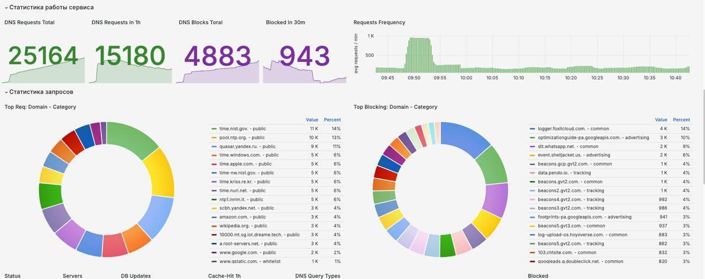

Расширенная DNS Защита
Защита организаций от киберугроз с помощью комплексного решения DNS-безопасности. Блокировка вредоносных доменов и безопасный просмотр веб-страниц.
Безопасный DNS для Вас
Блокируем фишинг и рекламу, поддерживаем DoH/DoT, даём мониторинг и быструю реакцию. Мы в топе abuse.ch.

Фундамент информационной безопасности
Базовые и расширенные механизмы защиты DNS, на которых строится киберустойчивость вашей сети.
Фильтрация и защита
Реклама, трекеры, фишинг, C2 — блокируем на уровне DNS.
Современные протоколы
DNS/DoH/DoT, Zero-Trust режим, rate limiting, ML-эвристики.
Мониторинг и SLA
Grafana/Prometheus, алерты, время реакции минутами.
Безопасность и Скорость
Быстрая фильтрация, высокая производительность, прозрачная наблюдаемость.
Блокировка Malware Malware - вредоносное ПО, включая вирусы, трояны, шпионские программы и т.д.
Фишинг, C2/C2C, malvertising: блэклисты + эвристики до попадания в сеть.
Молниеносный ответ
Оптимизированный резолвинг, DoH/DoT, гео‑маршрутизация. Низкая задержка под нагрузкой.
Real‑time журналирование
Syslog/SIEM/QRadar совместимость, Prometheus метрики, дашборды Grafana, панель Do-Vision Собственная панель мониторинга и управления Do-Tek DNS. .
Детект DNS‑туннелей
Энтропия, Base64/32/hex‑паттерны, поведенческие признаки, авто‑реакции по правилам.
LDAP Совместимость
Работает в изолированных сетях, поддержка LDAP/AD, гибкие правила маршрутизации DNS запросов.
Панель Do-Vision
RBAC, графики, управление списками, триггеры на события, уведомления в Telegram/Teams/Slack/Email.
Для бизнеса
Превентивный DNS DNS-сервис, который блокирует угрозы до их попадания в сеть клиента. , гибкая кастомизация под требования, совместимость с корпоративной безопасностью и аудитом.
Превентивный DNS
Блокировка фишинга, C2/C2C, malvertising.
Кастомизация и доработка
Персональные политики, интеграции, приватные резолверы и IP адреса.
Все под ключ
Внедрение, обучение, и сопровождение на всех этапах.
Опциональные плюсы
- Выделенные DoH/DoT‑ендпоинты под ваш домен
- Частные списки блокировок/исключений, pool-резольверов
- Помощь в аналитике и реагировании на инциденты
- On‑prem / hybrid развёртывание
- Расширенная ретенция логов
- Профессиональная поддержка
Безопасный детский интернет
Do-Tek KIDS DNS защищает детей от нежелательного контента: блокировка взрослого контента, фишинга и вредоносных сайтов. Подходит для школ, детских учреждений.
Тарифы
SMB, Enterprise и государственный сектор. Индивидуальные условия под вашу инфраструктуру и бюджет.
SMB / Офисы
Чистый интернет и защита от фишинга/малвари для команд и филиалов.
Enterprise
Персональные политики, интеграции и расширенная грануляция настроек.
Партнёры / MSSP
Мы открыты к партнерству. Просто свяжитесь с нами.
Как формируется стоимость
- • Количество пользователей/узлов, объём DNS‑трафика
- • Требования к SLA и зонам отказоустойчивости
- • Интеграции (SIEM/ITSM), кастомные политики и отчёты
- • On‑prem/hybrid размещение и ретенция логов
Скидки и условия
- • Образование, НКО, стартапы — специальные условия
- • Годовая предоплата и объём — дополнительная скидка
- • Пилот/POC — быстрый запуск и перенос на прод
- • Партнёрская программа для интеграторов/MSSP
Напишите нам — подберём конфигурацию и условия под вашу задачу: sales@do-tek.kz